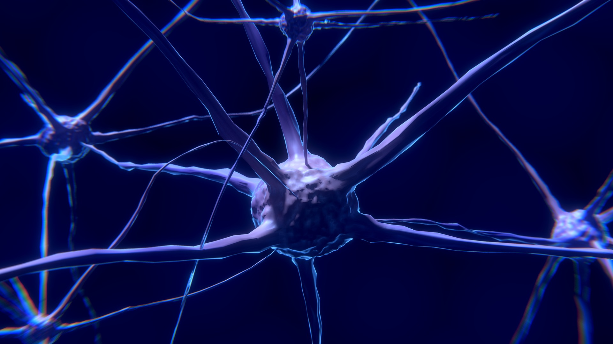
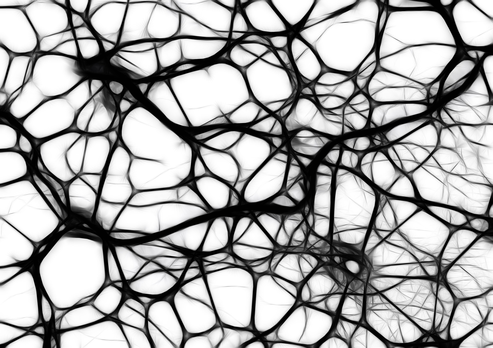

<!DOCTYPE html>
<html>
<head>
	<meta charset="utf-8" />
	<meta name="viewport" content="width=device-width, initial-scale=1.0, maximum-scale=1.0, user-scalable=no">
	<title>Formation au Deep-Learning</title>
	<link rel="stylesheet" href="assets/css/reveal/reveal.css">
	<link rel="stylesheet" href="assets/css/reveal/theme/white.css">
	<link rel="stylesheet" href="assets/css/highlight-hybrid.css">
	<link rel="stylesheet" href="assets/css/slideshow.css">
	<style>
	</style>
	<!--  -->
</head>
<body>
	<div class="reveal">
		<div class="slides">
			<section data-markdown
			data-separator="(^#HSLIDE$|^#HSLIDE\?.*)"
			data-separator-vertical="(^#VSLIDE$|^#VSLIDE\?.*)"
			data-separator-notes="^Presentation note:"
			data-charset="utf-8">
			<script type="text/template">
				# Formation au Deep-Learning
#HSLIDE

## Sommaire

- Réseau de neurones
- Droites de régression
- Listes de matrices
- Calcul d’erreur

#HSLIDE

## Les matrices : quelques rappels !
#VSLIDE

### L'addition de matrice
#### Généralités :

- L&#39;addition des matrices est définie pour deux matrices de même type.
- La somme de deux matrices de type (m, n), est obtenue en additionnant les éléments correspondants.

#### Exemple avec :
[
\begin{Bmatrix}
   A_{1}  \
   A_{2}
\end{Bmatrix}
] + [
\begin{Bmatrix}
   B_{1}  \
   B_{2}
\end{Bmatrix}
]

#VSLIDE

### Le produit matriciel
#### Généralités :

- La multiplication des matrices n&#39;est pas commutative, c&#39;est-à-dire que AB n&#39;est pas égal à BA.

À l’avenir, nous aurons seulement besoin de connaitre le produit d’une matrice de type (1,2) et d’une matrice de type (2,2).

#### Exemple avec :
[
\begin{Bmatrix}
   A_{1}  \
   A_{2}
\end{Bmatrix}
] + [
\begin{Bmatrix}
   B_{1} &amp;&amp; B_{1,2}  \
   B_{2,1} &amp;&amp; B_{2,2}
\end{Bmatrix}
]

#HSLIDE

## Réseau de neurones
#VSLIDE

### Le réseau fully connected
#### Définition :

- Le neurone formel est conçu comme un automate doté d&#39;une fonction de transfert qui transforme ses entrées en sortie selon des règles précises. Ces neurones sont par ailleurs associés en réseaux dont la topologie des connexions est variable : réseaux proactifs, récurrents, etc..




- Un réseau de neurones est considéré « fully connected » lorsque toute entrée est relié par une arête appelé « poids » et représenté par «  » à l’intégralité des neurones présents dans les couches cachées.



#### Représentation graphique :


[ ! ] Les couches cachées sont appelé zone de « pré-activation » et l’ensemble des output zone d’ « activation ».

#### Définition d'un biais :

- Le biais est l&#39;erreur provenant d’hypothèses erronées dans l&#39;algorithme d&#39;apprentissage. Un biais élevé peut être lié à un algorithme qui manque de relations pertinentes entre les données en entrée et les sorties prévues (sous-apprentissage).

#### Définition d’une fonction d’activation :

- La fonction d’activation (ou fonction de seuillage, ou encore fonction de transfert) sert à introduire une non-linéarité dans le fonctionnement du neurone.
- Les fonctions de seuillage présentent généralement trois intervalles :
 - en dessous du seuil, le neurone est non-actif
 - aux alentours du seuil, une phase de transition
 - au-dessus du seuil, le neurone est actif

#### Calcul de la valeur d'un neurone :
#HSLIDE

## Droites de régression
#VSLIDE

### Régression linéaire
#### Définition :

- Désigne un modèle dans lesquels est la médiane conditionnelle de « y » sachant « x ».
- Le modèle de régression linéaire est souvent estimé par la méthode des moindres carrés mais il existe aussi de nombreuses autres méthodes pour estimer ce modèle.

#### Représentation graphique du réseau précèdent :


Ce schéma représente ainsi la fonction d’activation

#VSLIDE

### La fonction d'activation
#### Définition :

- La fonction d’activation est une fonction mathématique appliquée à un signal en sortie d&#39;un neurone artificiel. Soit dans notre cas à la droite de régression linéaire.

#### Graphiquement :
#### Cas pratique :

- playground.tensorflow.org


#HSLIDE

## Listes de matrices
#VSLIDE

### Matrice : définition
#### Définition :

- Les matrices sont des tableaux de nombres qui servent à interpréter en termes calculatoires et donc opérationnels les résultats théoriques de l&#39;algèbre


#### Prenons pour exemple, cette image :


#HSLIDE

## Calculs par CPU / GPU / TPU
#VSLIDE

### CPU versus GPU
#### Le facteur nombre de cœurs :


- Avantages :
 - Accélération via GPU des applications


#### Démonstration :


https://www.youtube.com/watch?v=-P28LKWTzrI

#VSLIDE

### TPU ? Késako ?
#### Définition :

- Le TPU (Tensor Processor Unit) est un module hardware dédié spécifiquement aux applications de Machine Learning


#HSLIDE

## Calcul d'erreur
#VSLIDE

### Notion d'erreur
#### Définition :

- A chaque itération, l&#39;algorithme va calculer un indicateur de performance globale (l&#39;erreur qu&#39;il commet) en comparant la sortie attendue et la sortie prédite.


#VSLIDE

### Le batch
#### Définition :
#VSLIDE

### Le minimum local
#### Définition :

- Le minimum local est point dans une zone où le système établit qu’il ne peut semble pense avoir obtenu la meilleure précision mais ne l’est effectivement pas sur la courbe de précision de classification.


#VSLIDE

### Le learning rate
#### Définition :

- Représente la taille du « pas » en avant effectuer par le système pour atteindre le point d’apprentissage le plus efficient


#VSLIDE

### Le vanishing gradients


#### Définition :

- Le vanishing gradients est une perte (ou fuite) de gradient, affectant les neurones plus profond et unités de saturations dans un réseau profond.


#VSLIDE

### L'overfitting
#### Définition :

- L’overfitting (ou surapprentissage) est une étape où le système est arrivé à reconnaitre quasi-seulement les images sur lesquelles il a été entrainé et une variation de lumière ou de milieu peut l’induire à ne pas reconnaitre l’objet.


			</script>
		</section>
	</div>
</div>

<script src="assets/js/reveal/reveal.js"></script>
<script src="assets/js/reveal/lib/head.min.js"></script>
<script src="assets/js/jquery.js"></script>
<script>
Reveal.initialize({
	embedded: true,
	margin: 0.0,
	showNotes: false,
	transition: 'slide',
	autoSlide: 0,
	loop: false,
	center: true,
	rtl: false,
	shuffle: false,
	mouseWheel: false,
	history: true,

	// disabled for now
	// math: {
	// 	mathjax: 'https://cdn.mathjax.org/mathjax/latest/MathJax.js',
	// 	config: 'TeX-AMS_HTML-full'
	// },

	dependencies: [
		{ src: "assets/js/reveal/plugin/markdown/marked.js"},
		{ src: "assets/js/reveal/plugin/markdown/markdown.js"},
		{ src: "assets/js/reveal/plugin/notes/notes.js"},
		// { src: "assets/js/reveal/plugin/math/math.js", async: true }
		{ src: "assets/js/reveal/plugin/highlight/highlight.js", async: true, callback: function() { hljs.initHighlightingOnLoad(); } }
	]
});

Reveal.configure({
	keyboard: {
		67: function() { // bind "s" key to "select" code block content

		var currentSlide = Reveal.getCurrentSlide();
		var preBlock = $(currentSlide).find("pre");

		if(preBlock.length > 0) {

			if (window.getSelection) {
				var range = document.createRange();
				range.selectNodeContents(preBlock[0]);
				var selection = window.getSelection();
				selection.removeAllRanges();
				selection.addRange(range);
			}
		}
	}
}
});

</script>

</body>
</html>
